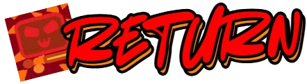

What are the different mechanics in the game?
These mechanics are really simple, but don't be fooled...
These mechanics are really simple, but don't be fooled...
The classic block, it always stays there... waiting for you to stay on it...

When you get on the jump block, you get thrown up high, maybe even higher depending on your gravity...
>This block moves back and forth... but the player needs to move alongside it as well! For now though...

For this block, you have to find a coin to unlock it! But... be careful! If you die, you will have to get the coin again!
These are not saws... these are invisible blocks... trust me bro...
The Yellow Flag is when a checkpoint is not currently active! But if it was once active and a Green Flag, then it will not be active again!